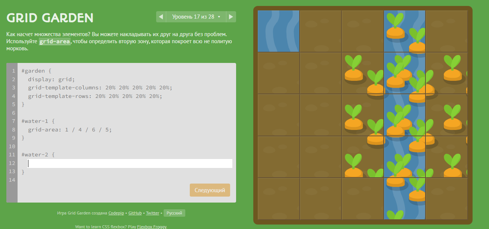

Kamenshchikov Andrey
I would like to note that this presentation was created on the basis of a modern JS library reveal.js!
CSS Grid Layout (aka “Grid” or “CSS Grid”), is a two-dimensional grid-based layout system that, compared to any web layout system of the past, completely changes the way we design user interfaces.
CSS has always been used to layout our web pages, but it’s never done a very good job of it. First, we used tables, then floats, positioning and inline-block, but all of these methods were essentially hacks and left out a lot of important functionality (vertical centering, for instance).
Flexbox is also a very great layout tool, but its one-directional flow has different use cases — and they actually work together quite well!
Grid is the very first CSS module created specifically to solve the layout problems we’ve all been hacking our way around for as long as we’ve been making websites.
The first comprehensive draft of a grid layout for CSS was created by Phil Cupp at Microsoft in 2011
As of October 2017, Chrome, Firefox, Safari and Edge all support CSS grid without vendor prefixes
https://developer.mozilla.org/ru/docs/Web/CSS/grid
https://doka.guide/css/grid-guide/
https://tpverstak.ru/grid/
https://grid.malven.co/
https://cssgridgarden.com/#ru
https://codingfantasy.com/games/css-grid-attack
https://flexboxfroggy.com/#ru
CSS grids are better to know even if you are not a professional frontend developer.
Ideal for positioning on two axes. For example, when we want to show goods of an online store in a grid structure.
Where Flex can be used, It is better to use Flex)